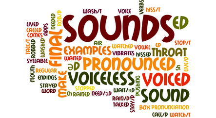

Lesson 3: Pronunciation and Intonation

In this lesson, we will focus on pronunciation and intonation patterns in English.
Pronunciation Tips
Here are some tips for improving your English pronunciation:
- Listen and Repeat: Listen to native speakers and try to mimic their pronunciation.
- Record Yourself: Record your speech and compare it to native speakers.
- Use a Mirror: Practice speaking in front of a mirror to see the shape of your mouth and position of your tongue.
- Practice Minimal Pairs: Practice words that differ by only one sound (e.g., ship and sheep).
- Learn Phonetic Symbols: Learn the International Phonetic Alphabet (IPA) symbols to understand how sounds are produced.
Intonation Patterns
Intonation is the rise and fall of the voice in speaking. Here are some common intonation patterns in English:
- Rising Intonation: Used for yes/no questions (e.g., Are you coming?).
- Falling Intonation: Used for statements and commands (e.g., I am coming. Sit down.).
- Rising-Falling Intonation: Used for choices or alternatives (e.g., Do you want tea or coffee?).
- Falling-Rising Intonation: Used for uncertainty or incomplete thoughts (e.g., I'm not sure if I can go...).
Source: Created for educational purposes.
Go to Exercise 3
Go to Game 3